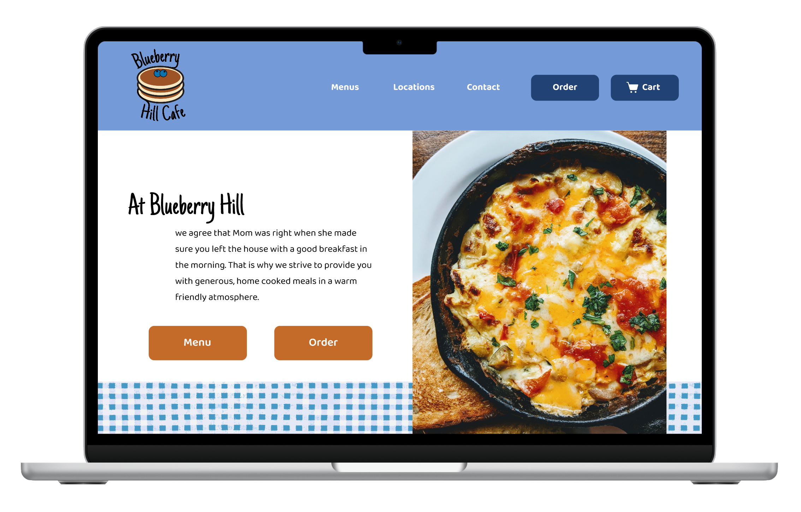
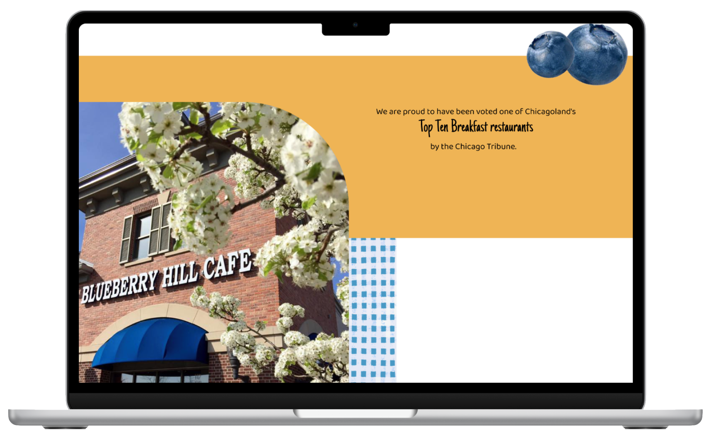
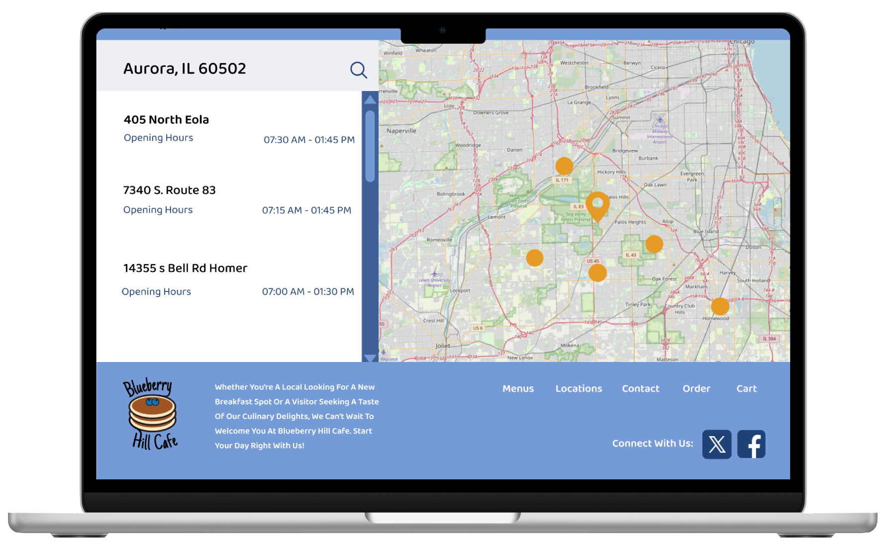
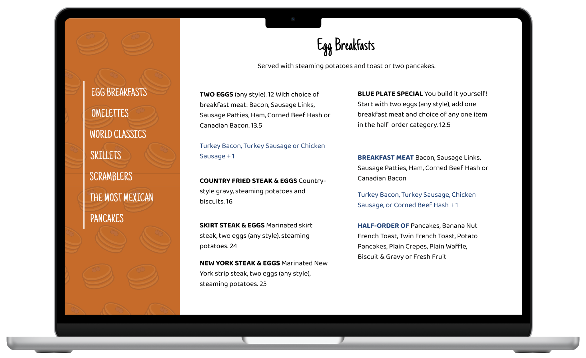
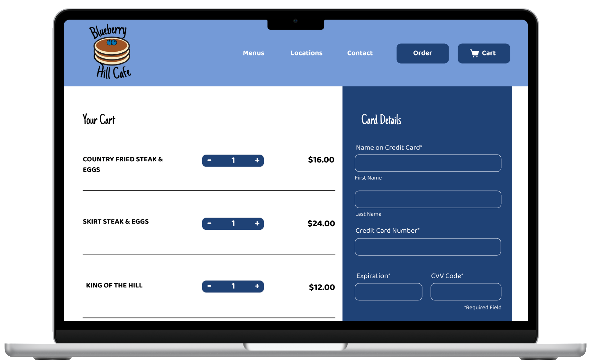

UI/UX DESIGN · PROTOTYPE
A website prototype for a local Cafe called Blueberry Hill, intended to introduce the café and allow visitors to easily explore its menu and make orders.

01 / DESIGN SHOWCASE




02 / DESIGN PROCESS
The warm yellow, orange, and blueberry blue colour palette helps to create a happy and inviting feeling for the customers.
Food photos, fun patterns, and playful typography showcase the café's unique identity.
Clear user interface and structured menu, locations, and checkout pages make the website easy to navigate.
03 / EXPLORE THE PROJECT
Explore the interactive cafe website prototype.